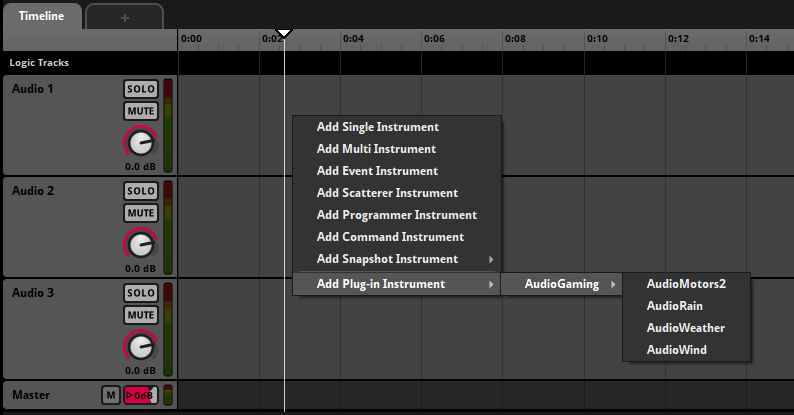
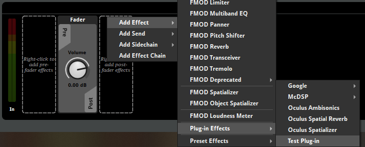
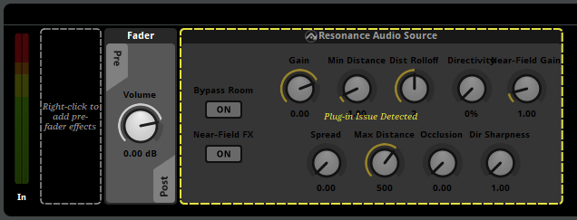

FMOD Studio User Manual 2.02
- Welcome to FMOD Studio
- FMOD Studio Concepts
- Organizing the Project
- Authoring Events
- Working with Instruments
- Managing Assets
- Parameters
- Getting Events into Your Game
- Mixing
- The Sandbox
- Editing During Live Update
- Profiling
- Dialogue and Localization
- Using Source Control
- Supporting Downloadable and User-generated Content
- Advanced Topics
- Quick Start Tutorial
- Event Macros Drawer Reference
- Instrument Reference
- Plug-in Reference
- Modulator Reference
- Parameters Reference
- Scripting
- Scripting API Reference
- Keyboard Shortcut Reference
- Troubleshooting
- Glossary
- Appendix: Celeste Getting Started Guide
- Appendix: Reaper Integration
20. Plug-in Reference
FMOD Studio and the Studio API support loading DSP plug-ins created using the FMOD Studio Plug-in SDK. Please see the FMOD Studio Plug-in SDK documentation for more information about authoring DSP plug-ins for FMOD.
20.1 Loading plug-ins
Plug-in libraries are automatically loaded from the following locations:
- System plug-in directory:
- Windows:
%localappdata%/FMOD Studio/Plugins - Mac:
~/Library/Application Support/FMOD Studio/Plugins
- Windows:
- Built-in plug-in directory:
- Windows:
%fmod_install_directory%/Plugins - Mac:
%fmod_bundle%/Plugins
- Windows:
- User plug-in directory
- Available in the assets tab of the preferences dialog.
- Project plug-in directory:
%project_root_directory%/Plugins
Changing the user plug-in directory, will cause all plug-ins to be reloaded. Warnings are added to the log for plug-ins that fail to load. This can be viewed from the Logging tab of the Console window.
20.2 Using plug-ins
Once a DSP plug-in is loaded, it can be used within the project. Plug-ins with zero input channels, often referred to as generators, can be added as plug-in instruments.

Plug-ins that process input signals can be added as plug-in effects.

By default, the appearance of plug-ins in FMOD Studio is based on the FMOD_DSP_DESCRIPTION and attached FMOD_DSP_PARAMETER_DESC. This includes the plug-in's name, available properties, and deck layout.
It is possible to change the appearance of a plug-in using the plug-in scripting API.
20.3 Trial plug-ins
A trial plug-in is an effect that has been developed by a third party developer.
Trial plug-in effects can be auditioned in FMOD Studio, but .bank files that include trial plug-in effects cannot be loaded at runtime.
The files required to use these plug-in effects in your game must be purchased and loaded using the Studio API. Contact sales@fmod.com to find more information on how to purchase these third party plug-ins.
20.4 Plug-in Scripting API
To customize the appearance of a plug-in, the FMOD_DSP_DESCRIPTION can be augmented by adding a javascript file that sits alongside the plug-in library. This file must end in the .plugin.js extension. The javascript file can then make use of the plug-in scripting API, which can be used to register plug-in descriptions for one or more plug-ins using the studio.plugins.registerPluginDescription() function. For example:
studio.plugins.registerPluginDescription("Acme_Explosion", {
companyName: "Acme",
productName: "Explosion Generator",
deckUi: {
// deck widget layout
},
});
By registering a plugin description, the appearance of a plug-in can be customized accordingly.
Plug-in script files are reloaded when plug-in libraries are reloaded, or when selecting "Scripts > Reload".
It is recommended that FMOD_DSP_DESCRIPTION.name and FMOD_DSP_PARAMETER_DESC.name fields are not changed after deployment of a plug-in library, as FMOD Studio uses these names as identifiers for the corresponding DSPs.
20.4.1 API functions
studio.plugins.registerPluginDescription(identifier, pluginDescription)
Registers a plug-in description. The identifier must match the FMOD_DSP_DESCRIPTION.name.
The pluginDescription argument is an object with attributes as described below. All attributes of the pluginDescription are optional.
pluginDescription.companyName
A string corresponding to the author of the plug-in. Plug-ins with the same company name are grouped in the same menu in context menus.
pluginDescription.productName
A string corresponding to the name of the plug-in.
pluginDescription.parameters
An Object which maps each FMOD_DSP_PARAMETER_DESC.name to a description Object. Each DSP parameter description Object contains the following optional attributes:
displayName: The label shown above property controls bound to this DSP parameter.enumeration: The labeled values available for this DSP parameter. Each label corresponds to an integer value, with the first label being equal to 0, and each subsequent label value increasing incrementally.
For example:
parameters: {
"gain": {
// FMOD_DSP_PARAMETER_DESC.name is "gain"
displayName: "Volume"
},
"freq": {
// FMOD_DSP_PARAMETER_DESC.name is "freq"
displayName: "Frequency"
},
"outputMode": {
// FMOD_DSP_PARAMETER_DESC.name is "outputMode"
displayName: "Output",
enumeration: ["Mono", "Stereo", "Surround"], // Mono = 0, Stereo = 1, Surround = 2
},
"pattern": {
// FMOD_DSP_PARAMETER_DESC.name is "pattern"
displayName: "Pattern",
enumeration: ["Rain", "Hail", "Shine"], // Rain = 0, Hail = 1, Shine = 2
},
},
pluginDescription.defaultConfigurations
An Array containing Objects which describe default configurations for the plug-in parameters. These can be accessed from the context menu of the plug-in in the deck.
defaultConfigurations: [
{
name:"Quiet",
parameterValues: {
"gain": -20,
},
},
{
name:"Bright",
parameterValues: {
"gain": 0,
"freq": 5000,
},
},
],
pluginDescription.deckUi
An Object describing the user interface for the plug-in when displayed in the deck. For example:
deckUi: {
deckWidgetType: studio.ui.deckWidgetType.Layout,
layout: studio.ui.layoutType.VBoxLayout,
spacing: 6,
items: [
{ deckWidgetType: studio.ui.deckWidgetType.Pixmap, filePath: __dirname + "/company_logo.png", },
{ deckWidgetType: studio.ui.deckWidgetType.Button, binding: "invert", },
{ deckWidgetType: studio.ui.deckWidgetType.Dial, color: "#e31a1c", binding: "freq", },
{ deckWidgetType: studio.ui.deckWidgetType.Dropdown, binding: "mode", buttonWidth: 44, },
],
},
The layout of the deck panel is based on a deck widget description object, which contains the following attributes:
widgetType: A studio.ui.deckWidgetType. A required attribute.minimumWidth: The minimum width in pixels for a widget (number).minimumHeight: The minimum height in pixels for a widget (number).maximumWidth: The maximum width in pixels for a widget (number).maximumHeight: The maximum height in pixels for a widget (number).sizePolicy: A studio.ui.sizePolicy.
Applicable to deckWidgetType.Layout:
layout: A studio.ui.layoutType. A required attribute.items: AnArrayof deck widget descriptions to nest in this layout.contentsMargins: Describes the margins around a layout. AnObjectwith the format{ left:[number], top:[number], right:[number], bottom:[number] }.spacing: The spacing between items in pixels (number).isFramed: Setting this totruewill cause a background to be drawn for the layout. This is useful when using a layout to visually group many related widgets.
Applicable to items within a layoutType.HBoxLayout or layoutType.VBoxLayout:
stretchFactor: Determines how much space an item consumes relative to its siblings (number).alignment: A studio.ui.alignment.
Applicable to items within a layoutType.GridLayout:
row: Row index in grid (number).column: Column index in grid (number).rowSpan:numberof rows for item to span.columnSpan:numberof columns for item to span.alignment: A studio.ui.alignment.
Applicable to deckWidgetType.Label:
text: Text to display (string).
Applicable to deckWidgetType.Pixmap:
filePath: An absolute path to an image on disk. Most common image file formats are supported. An file path relative to the current script can be retrieved by using __dirname, for example__dirname + "/image.png".
Applicable to deckWidgetType.Dial:
binding: The DSP property name to bind to. This must match anFMOD_DSP_PARAMETER_DESC.name. Required.color: The bezel color of the dial as astring. Hex colors are supported, for example"#aa2266".
Applicable to deckWidgetType.Fader:
binding: The DSP property name to bind to. This must match anFMOD_DSP_PARAMETER_DESC.name. Required.
Applicable to deckWidgetType.MinMaxFader:
minimumBinding: The DSP property name to bind to for the minimum value of the range. This must match anFMOD_DSP_PARAMETER_DESC.name. Required.maximumBinding: The DSP property name to bind to for the maximum value of the range. This must match anFMOD_DSP_PARAMETER_DESC.name. Required.text: The text to display in the label above the the fader.
Applicable to deckWidgetType.NumberBox:
binding: The DSP property name to bind to. This must match anFMOD_DSP_PARAMETER_DESC.name. Required.color: The background color of the number box as astring. Hex colors are supported, for example"#aa2266".
Applicable to deckWidgetType.Dropdown:
binding: The DSP property name to bind to. This must match anFMOD_DSP_PARAMETER_DESC.name. Required.
Applicable to deckWidgetType.Button:
binding: The DSP property name to bind to. This must match anFMOD_DSP_PARAMETER_DESC.name. Required.text: The text to display on the button.buttonWidth: The width of the button image in pixels.
Applicable to deckWidgetType.ButtonGroup:
binding: The DSP property name to bind to. This must match anFMOD_DSP_PARAMETER_DESC.name. Required.buttonWidth: The width of each button in the button group, in pixels.buttons: AnArrayofObjects with the following format{ text:[string], row:[number], column:[number]. Each item allows for specific buttontextto be set, and a particular buttonrowandcolumnto be assigned.
Applicable to deckWidgetType.DataDrop:
binding: The DSP property name to bind to. This must match anFMOD_DSP_PARAMETER_DESC.name. Required.fileNameFilters: Astringdescribing the supported file name filters that can be dropped on this widget. Multiple filters can be specified, separated by spaces (e.g."*.wav *.raw *.mp4").dataMode: A studio.ui.dataDropMode. Defaults tostudio.ui.dataDropMode.File.
Applicable to deckWidgetType.DistanceRolloffGraph:
minimumDistanceBinding: The DSP property name to bind to for the minimum value of the distance range. This must match anFMOD_DSP_PARAMETER_DESC.name. Required.maximumDistanceBinding: The DSP property name to bind to for the maximum value of the distance range. This must match anFMOD_DSP_PARAMETER_DESC.name. Required.rolloffTypeBinding: The DSP property name to bind to for the roll-off type. This must match anFMOD_DSP_PARAMETER_DESC.name. Required.rolloffTypes: AnObjectwhich maps values available for therolloffTypeBindingspecified to the available project.distanceRolloffType roll-offs. For example:
rolloffTypes: {
-1: studio.project.distanceRolloffType.Custom,
0: studio.project.distanceRolloffType.Linear,
1: studio.project.distanceRolloffType.LinearSquared,
},
Applicable to deckWidgetType.PolarDirectivityGraph:
directivityBinding: The DSP property name to bind to representing the polar directivity. This must match anFMOD_DSP_PARAMETER_DESC.name. The assigned property should be in the range of 0 to 1. Required.sharpnessBinding: The DSP property name to bind to representing the polar sharpness. This must match anFMOD_DSP_PARAMETER_DESC.name. The assigned property should have a range starting at 1. Required.
studio.ui.deckWidgetType
An enum corresponding to different deck widget types available for a pluginDescription.deckUi widget. For bindable controls (e.g. dials, faders), properties with the appropriate FMOD_DSP_PARAMETER_TYPE should be selected. Possible values are:
Spacer: A blank widget.Layout: A container widget. Must specify a corresponding layout type.Label: A text label.Pixmap: An image.Dial: A dial control. Appropriate forFMOD_DSP_PARAMETER_TYPE_FLOATandFMOD_DSP_PARAMETER_TYPE_INT.Fader: A slider control. Appropriate forFMOD_DSP_PARAMETER_TYPE_FLOATandFMOD_DSP_PARAMETER_TYPE_INT.MinMaxFader: A range-based horizontal slider control. Appropriate for twoFMOD_DSP_PARAMETER_TYPE_FLOATparameters which represent a minimum and maximum value range.NumberBox: A number box control. Appropriate forFMOD_DSP_PARAMETER_TYPE_FLOATandFMOD_DSP_PARAMETER_TYPE_INT.Dropdown: A drop-down control. Appropriate forFMOD_DSP_PARAMETER_TYPE_INT.Button: A button control. Appropriate forFMOD_DSP_PARAMETER_TYPE_INT(with two values) andFMOD_DSP_PARAMETER_TYPE_BOOL.ButtonGroup: A button group control. Appropriate forFMOD_DSP_PARAMETER_TYPE_INT.DataDrop: A data control. Appropriate forFMOD_DSP_PARAMETER_TYPE_DATA.SidechainInput: A sidechain input selector. Appropriate for plug-in effects that have anFMOD_DSP_PARAMETER_TYPE_DATAparameter with theFMOD_DSP_PARAMETER_DATA_TYPE_SIDECHAINdata type.InputMeter: An input meter for a plug-in effect. This widget is incompatible with plug-in instruments.OutputMeter: An output meter for a plug-in effect. This widget is incompatible with plug-in instruments.GainReductionMeter: A gain reduction meter (GRM) for a plug-in effect. This widget is incompatible with plug-in instruments.DistanceRolloffGraph: A graph displaying the roll-off applied for a given project.distanceRolloffType as well as a button group control to the right for selecting the roll-off to apply. This widget requires twoFMOD_DSP_PARAMETER_TYPE_FLOATparameters which represent a minimum and maximum distance range, and anFMOD_DSP_PARAMETER_TYPE_INTrepresenting the selected roll-off.PolarDirectivityGraph: A graph displaying polar directivity. Appropriate for twoFMOD_DSP_PARAMETER_TYPE_FLOATparameters which represent a sharpness value and directivity value.
studio.ui.dataDropMode
An enum corresponding to the different types of input methods available for a deckWidgetType.DataDrop widget. Possible values are:
File: File can be dropped on the widget or selected via a file browser.Text: Text can be entered via a text input prompt.
20.5 Updating plug-ins
When working with custom DSP plug-ins, there may be times when migrating from an FMOD Designer project, migrating to a newer version of FMOD Studio, or the DSP's description gets updated which can cause DSPs to need repairing in the FMOD Studio project.
When an issue has been detected, the effect plug-in module or plug-in instrument is faded with a dashed yellow outline.

FMOD Studio supports repairing or removing DSP plug-in instances when a plug-in description changes or a plug-in DLL has been removed. This can be done by clicking on the deck widget of the corresponding plug-in instance. Plug-ins can be repaired or removed per instance or across an entire project.